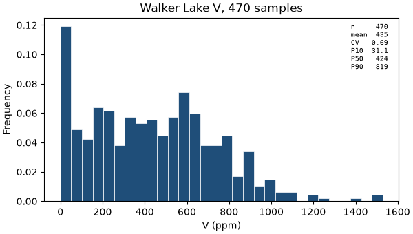
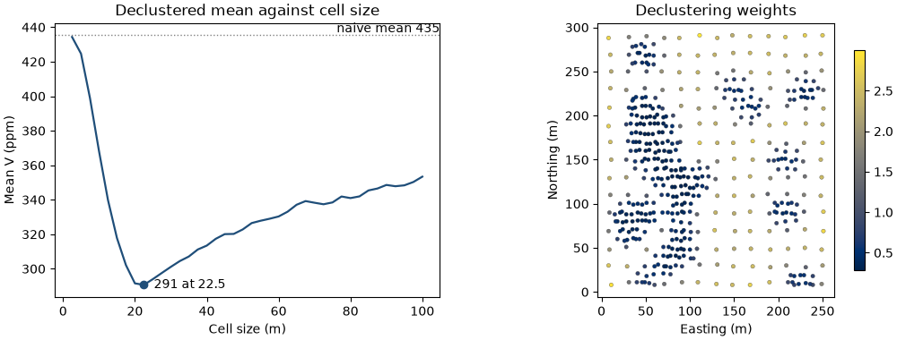
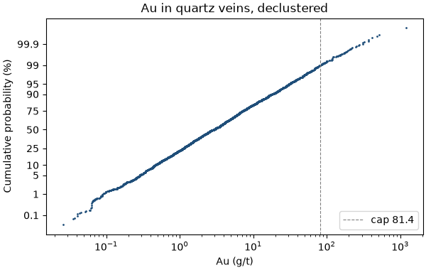
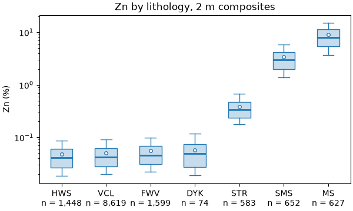
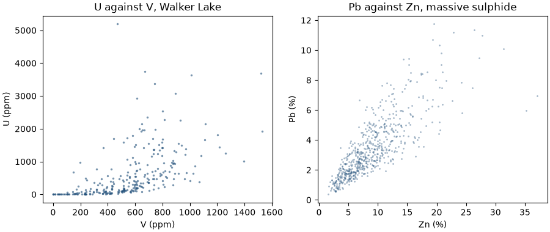
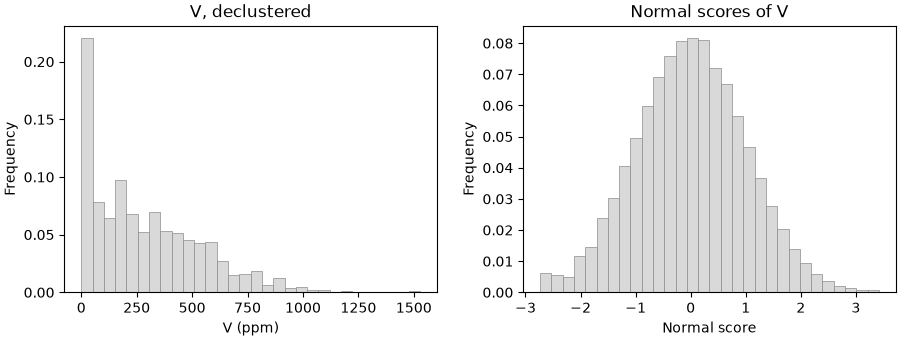

Note
Click here to download the full example code
Describing data¶
- 1. Samples and support
- 2. Describing data
- 3. Spatial continuity
- 4. Kriging
- 5. Simulation
- 6. Checking a model
Before you model a variable in space, describe it: how its values spread, where the extremes are, how rock types differ and how variables move together. This chapter computes these statistics on real datasets and corrects them for clustered samples, extreme values and mixed populations.
import sys
from pathlib import Path
HERE = Path(__file__).parent if "__file__" in globals() else Path.cwd()
sys.path.insert(0, str(HERE.parents[1] / "examples"))
What you'll learn
- Read a histogram through its mean, variance, coefficient of variation and skewness.
- Correct statistics for clustered samples with cell declustering.
- Find extreme values and cap them without losing track of the metal.
- Split the data into domains, and see why pooled statistics mislead.
- Measure how two variables move together.
- Preview the normal-score transform used by simulation.
Prerequisites: chapter 1, in particular support, compositing and preferential sampling.
The histogram and its summary statistics¶
A histogram sorts the values into bins and shows the share of samples in each. Four numbers summarize it (Figure 1):
- the mean, the average value;
- the variance, the average squared distance from the mean, and its square root, the standard deviation;
- the coefficient of variation (CV), the standard deviation divided by the mean: a spread you can compare between variables with different units;
- the skewness, which measures asymmetry. Grades are usually positively skewed: most values are low and a long tail runs to high values.
bt.describe returns the count, the moments and a set of quantiles in one dictionary. Skewness is one line of
NumPy:
import boitata as bt
import matplotlib.pyplot as plt
import numpy as np
from common import ACCENT, GRAY, INK, LIGHT, map_axes, save
samples = bt.datasets.walker_lake()
v = samples["V"]
def skewness(values, weights=None):
mean = np.average(values, weights=weights)
third = np.average((values - mean) ** 3, weights=weights)
return third / np.average((values - mean) ** 2, weights=weights) ** 1.5
stats = bt.describe(v)
print({k: round(x, 2) for k, x in stats.items()})
print(f"skewness {skewness(v):.2f}")
fig, ax = plt.subplots(figsize=(6, 3.4), layout="constrained")
bt.plot.histogram(v, bins=30, stats=True, ax=ax, color=ACCENT)
ax.set(title="Walker Lake V, 470 samples", xlabel="V (ppm)")
save(fig, "histogram")

Out:
470/470 · 00:00{'n': 470, 'mean': 435.3, 'variance': 89738.06, 'std': 299.56, 'cv': 0.69, 'min': 0.0, 'max': 1528.1, 'P10': 31.1, 'P25': 184.4, 'P50': 424.0, 'P75': 641.3, 'P90': 818.9}
skewness 0.46
The 470 samples of V have a mean of 435 ppm, a standard deviation of 300 ppm and a CV of 0.69. The median
(P50) is 424 ppm, close to the mean, and the skewness is a mild 0.46. Chapter 1 showed that these samples
crowd into the rich zones, and that crowding distorts every number above.
The math
With weights \(w_i\) summing to 1 (equal weights are \(w_i = 1/n\)): [ m = \sum_i w_i z_i, \qquad \sigma^2 = \sum_i w_i (z_i - m)^2, \qquad \mathrm{CV} = \frac{\sigma}{m}, \qquad \mathrm{skewness} = \frac{\sum_i w_i (z_i - m)^3}{\sigma^3}. ] Every statistic in this chapter accepts declustering weights through the same formulas.
Declustered statistics¶
Clustered samples over-represent the zones where they cluster. To describe the whole area, give each sample a weight proportional to the area it represents. Cell declustering does this with a grid of cells: each cell receives the same total weight, split equally among the samples inside it (Figure 2). An isolated sample on the first campaign's grid keeps a large weight; each of four infill samples sharing one cell receives a quarter.
The result depends on the cell size. Cells smaller than the closest spacing hold one sample each and change
nothing; one cell covering the whole area holds every sample and changes nothing either. Between the two, when
the clusters sit on high values, the declustered mean dips. cell_declustering scans a list of sizes, averages
each over several grid origins, and keeps the size with the lowest mean:
declustering = bt.cell_declustering(samples, "V", sizes=np.arange(2.5, 102.5, 2.5))
weights = declustering.weights
print(
f"cell size {declustering.cell_size:.1f} m; "
f"weights from {weights.min():.2f} to {weights.max():.2f}, mean {weights.mean():.2f}"
)
truth = bt.datasets.walker_lake_exhaustive()["V"]
print(f"{'':12}{'mean':>6}{'variance':>10}{'CV':>6}{'skew':>6}")
for name, values, w in (("naive", v, None), ("declustered", v, weights), ("exhaustive", truth, None)):
s = bt.describe(values, weights=w)
print(f"{name:<12}{s['mean']:>6.0f}{s['variance']:>10.0f}{s['cv']:>6.2f}{skewness(values, w):>6.2f}")
fig, (a, b) = plt.subplots(1, 2, figsize=(10, 3.8), layout="constrained")
bt.plot.declustering(declustering, naive=v.mean(), ax=a, color=ACCENT, lw=1.6)
a.set(title="Declustered mean against cell size", xlabel="Cell size (m)", ylabel="Mean V (ppm)")
drawn = b.scatter(*samples.coords[:, :2].T, c=weights, s=10, cmap="cividis", edgecolors=INK, linewidths=0.2)
map_axes(b, "Declustering weights")
fig.colorbar(drawn, ax=b, shrink=0.8)
save(fig, "declustering")

Out:
cell size 22.5 m; weights from 0.29 to 3.00, mean 1.00
78000/78000 · 00:00 mean variance CV skew
naive 435 89738 0.69 0.46
declustered 291 65006 0.88 0.95
exhaustive 278 62422 0.90 1.02
fixed = bt.cell_declustering(samples, "V", cell_size=5.0).weights
print(f"try-it: 5 m cells give {np.average(v, weights=fixed):.0f} ppm, median weight {np.median(fixed):.2f}")
distance = np.linalg.norm(samples.coords[:, None] - samples.coords[None], axis=2)
np.fill_diagonal(distance, np.inf)
print(
f"clustered samples, median nearest-neighbor distance {np.median(distance.min(1)[weights < 0.8]):.1f} m"
)
Out:
try-it: 5 m cells give 425 ppm, median weight 1.04
clustered samples, median nearest-neighbor distance 4.2 m
The mean falls from 435 ppm to a minimum of 291 ppm at 22.5 m cells, then climbs as the cells grow. At 22.5 m, the weights run from 0.29 in the dense clusters to 3.00 on the sparse grid.
Walker Lake is one of the few datasets where you can check the answer. Declustering moves the mean from 435 to 291 ppm against a true 278 ppm, the variance from 89 738 to 65 006 ppm² against 62 422, and the skewness from 0.46 to 0.95 against 1.02. Every statistic moves toward the truth. The CV rises from 0.69 to 0.88 because the mean falls faster than the standard deviation.
Key idea
Declustering weights make clustered samples represent the whole area. Use them for every global statistic: histograms, statistics by domain, top cuts and the normal-score transform.
Pitfall
The lowest declustered mean is the right target only when the clusters sit on high values. If the infill targeted low values, the right cell size would maximize the mean. Look at the sample map before you trust the minimum, and prefer a cell size close to the spacing of the sparse grid.
Outliers and top cuts¶
Some deposits have a few values far above the rest. Gold in quartz veins is the classic case. Such an outlier is usually a real measurement, and deleting it deletes real metal. During estimation, though, one extreme sample lends its grade to every block around it. A top cut, or cap, limits this: every value above the cap is set to the cap (Figure 3).
The vein gold dataset holds four quartz veins drilled by holes and sampled by underground channels. Take the 1 m composites inside the veins and decluster them in 20 m cells, because channels crowd the developed levels:
gold = bt.datasets.vein_gold_grade_control()
gold_holes = bt.Drillholes(
gold["collars"], gold["surveys"], bt.merge_intervals(gold["assays"], gold["lithology"])
)
composites = gold_holes.composite(1.0, ["AU_GPT"], domain="LITH")
quartz = composites.filter((np.array(composites["LITH"]) == "QV") & ~np.isnan(composites["AU_GPT"]))
au = quartz["AU_GPT"]
au_weights = bt.cell_declustering(quartz, "AU_GPT", cell_size=20.0).weights
raw = bt.describe(au, weights=au_weights)
print(f"{len(quartz)} composites; declustered mean {raw['mean']:.2f} g/t, CV {raw['cv']:.2f}")
print(f"largest five: {np.round(np.sort(au)[::-1][:5], 0)}")
Out:
2610/2610 · 00:006736/6736 · 00:0039799/39799 · 00:0010954/10954 · 00:005041/5041 · 00:0053894/53894 · 00:0014370/14370 · 00:0017642/17642 · 00:006984/6984 · 00:005826 composites; declustered mean 8.33 g/t, CV 3.22
largest five: [1192. 521. 487. 408. 368.]
The CV of 3.22 is high for a grade; the largest composite, 1192 g/t, is more than twice the next. bt.capping
tries a cap at each of several high quantiles and reports the share of weight above it, the share of metal it
removes, and the capped mean and CV:
caps = bt.capping("AU_GPT", weights=au_weights, data=quartz)
print(f"{'cap':>7}{'above (%)':>11}{'metal (%)':>11}{'mean':>7}{'CV':>6}")
for cap, above, metal, mean, cv in zip(*(caps[c] for c in caps.column_names), strict=True):
print(f"{cap:>7.1f}{100 * above:>11.1f}{100 * metal:>11.1f}{mean:>7.2f}{cv:>6.2f}")
capping = bt.Capping(quantile=0.99).fit(au, weights=au_weights)
print(
f"cap {capping.caps_:.1f} g/t: {(au > capping.caps_).sum()} composites cut, "
f"{capping.metal_removed_:.1%} of the metal removed"
)
fig, ax = plt.subplots(figsize=(6, 3.8), layout="constrained")
bt.plot.probability(au, weights=au_weights, log=True, cap=capping.caps_, ax=ax, color=ACCENT, ms=2)
ax.set(title="Au in quartz veins, declustered", xlabel="Au (g/t)")
ax.legend(loc="lower right")
save(fig, "probability")

Out:
cap above (%) metal (%) mean CV
18.1 10.0 36.5 5.29 1.07
30.8 5.0 25.5 6.21 1.30
49.2 2.5 17.6 6.86 1.51
81.4 1.0 11.5 7.38 1.74
120.3 0.4 8.1 7.66 1.92
297.7 0.1 3.4 8.05 2.34
cap 81.4 g/t: 67 composites cut, 11.5% of the metal removed
A cap at the declustered 99th percentile, 81.4 g/t, cuts 67 composites and removes 11.5 % of the metal: the mean
falls from 8.33 to 7.38 g/t and the CV from 3.22 to 1.74. Capping follows the
library's transform pattern: fit learns the cap from the data, transform applies it to any values.
Use the probability plot to choose the cap. On a log scale, a lognormal distribution plots as a straight line. These composites follow one line from about 0.1 g/t to beyond the cap, and the single 1192 g/t composite stands apart at the top.
Pitfall
A cap is a judgment, and it removes metal on purpose. Report the metal removed with every cap, choose caps per domain rather than on pooled data, and leave a variable uncapped when its probability plot shows no break in the tail.
Statistics by domain¶
A domain is a volume of rock whose grades share one population: one lithology, one alteration zone, one vein. Pooling domains mixes populations, and the pooled histogram describes none of them (Figure 4).
bt.describe_by computes the same statistics per category. Apply it to the stacked sulphide lenses,
composited to 2 m within each lithology as in chapter 1:
lenses = bt.datasets.stacked_sulphide_lenses()
lens_holes = bt.Drillholes(
lenses["collars"], lenses["surveys"], bt.merge_intervals(lenses["assays"], lenses["lithology"])
)
zinc = lens_holes.composite(2.0, ["ZN_PCT", "PB_PCT"], domain="LITH")
table = bt.describe_by("ZN_PCT", "LITH", data=zinc)
print(f"{'LITH':<6}{'n':>7}{'mean':>8}{'CV':>6}")
for row in zip(*(table[c] for c in ["category", "n", "mean", "cv"]), strict=True):
print(f"{row[0]:<6}{row[1]:>7.0f}{row[2]:>8.2f}{row[3]:>6.2f}")
fig, ax = plt.subplots(figsize=(6, 3.6), layout="constrained")
bt.plot.boxplot("ZN_PCT", "LITH", sort=True, log=True, data=zinc, ax=ax)
ax.set(title="Zn by lithology, 2 m composites", ylabel="Zn (%)")
save(fig, "domains")

Out:
289/289 · 00:004348/4348 · 00:0016995/16995 · 00:001726/1726 · 00:0018471/18471 · 00:0031528/31528 · 00:0025920/25920 · 00:0026064/26064 · 00:00LITH n mean CV
DYK 74 0.06 0.66
FWV 1599 0.06 0.68
HWS 1448 0.05 0.66
MS 627 8.94 0.55
SMS 652 3.44 0.61
STR 583 0.38 0.56
VCL 8619 0.05 0.67
all 13602 0.64 3.57
Zinc averages 8.94 % in massive sulphide (MS), 3.44 % in semi-massive sulphide (SMS), 0.38 % in the stringer
zone (STR) and 0.05 to 0.06 % in the host rocks. Within each lithology the CV lies between 0.55 and 0.68;
pooled, it is 3.57. Mixing the populations creates the pooled spread.
Domains also constrain estimation. A variogram, a kriging estimate or a simulation assumes one population
throughout. Estimate the lenses and the host rock together and the high grades of MS leak into the waste around
it. Estimate each domain with its own samples, and treat the contacts as boundaries.
Scatter plots and correlation¶
Two variables measured on the same samples can move together. A scatter plot shows the pairs; the correlation coefficient summarizes them in one number between -1 and 1. The Pearson coefficient measures how well a straight line fits the pairs. It is sensitive to extreme values. The Spearman coefficient is the Pearson coefficient of the ranks, so it measures whether one variable rises when the other does, whatever the shape, and extreme values carry no extra weight.
u = samples["U"]
both = ~np.isnan(u)
pearson = np.corrcoef(v[both], u[both])[0, 1]
ranks = [np.argsort(np.argsort(x)) for x in (v[both], u[both])]
spearman = np.corrcoef(*ranks)[0, 1]
print(f"{both.sum()} samples with both V and U: Pearson {pearson:.2f}, Spearman {spearman:.2f}")
ms = np.array(zinc["LITH"]) == "MS"
print(f"Zn and Pb in MS: Pearson {np.corrcoef(zinc['ZN_PCT'][ms], zinc['PB_PCT'][ms])[0, 1]:.2f}")
fig, (a, b) = plt.subplots(1, 2, figsize=(9, 3.8), layout="constrained")
a.scatter(v[both], u[both], s=6, color=ACCENT, alpha=0.6, linewidths=0)
a.set(title="U against V, Walker Lake", xlabel="V (ppm)", ylabel="U (ppm)")
b.scatter(zinc["ZN_PCT"][ms], zinc["PB_PCT"][ms], s=4, color=ACCENT, alpha=0.4, linewidths=0)
b.set(title="Pb against Zn, massive sulphide", xlabel="Zn (%)", ylabel="Pb (%)")
save(fig, "scatter")

Out:
275 samples with both V and U: Pearson 0.55, Spearman 0.76
Zn and Pb in MS: Pearson 0.81
print(f"try-it: Pearson of log1p {np.corrcoef(np.log1p(v[both]), np.log1p(u[both]))[0, 1]:.2f}")
print(f"U above 3000 ppm: {(u[both] > 3000).sum()} samples")
Out:
try-it: Pearson of log1p 0.78
U above 3000 ppm: 6 samples
U was measured on 275 samples; the other 195 are nulls and drop out of the pairs. On those 275, the Pearson
coefficient is 0.55 and the Spearman coefficient 0.76. The gap comes from the tail of U: six samples above
3000 ppm sit far from any straight line, and Pearson pays for them. In the massive sulphide, zinc and lead reach a
Pearson coefficient of 0.81: the two metals rise together.
A first look at the normal-score transform¶
Simulation methods such as sequential Gaussian simulation assume a standard normal variable: mean 0, variance 1, symmetric, with a bell-shaped histogram. Grades are rarely like that. The normal-score transform maps each value to the standard normal score with the same cumulative probability (Figure 5). A value at the 75th percentile of the grades becomes 0.67, the 75th percentile of the standard normal.
NormalScore is a transform with fit, transform and inverse_transform. Fit it with the declustering
weights, so that the scores describe the area rather than the clusters:
transform = bt.NormalScore()
scores = transform.fit_transform(v, weights=weights)
mean = np.average(scores, weights=weights)
sd = np.sqrt(np.average((scores - mean) ** 2, weights=weights))
print(
f"normal scores: weighted mean {mean:.3f}, standard deviation {sd:.3f}, skewness {skewness(scores, weights):.2f}"
)
fig, (a, b) = plt.subplots(1, 2, figsize=(9, 3.4), layout="constrained")
bt.plot.histogram(v, weights=weights, bins=30, ax=a, color=LIGHT, edgecolor=GRAY)
a.set(title="V, declustered", xlabel="V (ppm)")
bt.plot.histogram(scores, weights=weights, bins=30, ax=b, color=LIGHT, edgecolor=GRAY)
b.set(title="Normal scores of V", xlabel="Normal score")
save(fig, "normal_score")
print(f"back-transform: largest error {np.abs(transform.inverse_transform(scores) - v).max():.1e} ppm")

Out:
normal scores: weighted mean 0.001, standard deviation 0.998, skewness 0.01
back-transform: largest error 0.0e+00 ppm
The weighted scores have mean 0.001, standard deviation 0.998 and skewness 0.01: a standard normal variable. The back-transform returns every original grade with an error of 0 ppm, so a simulation can work in scores and report in ppm. Chapter 5 uses the transform in earnest.
Check before you move on
- Why does the mean of a positively skewed variable exceed its median?
- Walker Lake's declustered mean is 291 ppm. Why is it lower than the naive 435 ppm, and what would make declustering raise the mean instead?
- A cap at the 99th percentile removes 11.5 % of the gold. What must you report next to the capped mean?
- The pooled CV of zinc is 3.57 while each lithology's CV is below 0.7. What does that tell you?
- Why can the Spearman coefficient differ from the Pearson coefficient on the same pairs?
See also
- Declustering compares cell and polygonal declustering on a coal seam.
- Top cuts chooses one cap per vein.
- Statistics by domain adds cumulative distributions and Q-Q plots.
- Correlations and normal-score transform.
- API:
describe,describe_by,capping,Capping,NormalScore.
Next: Spatial continuity: how values relate to their neighbors, and the variogram that measures it.
Total running time of the script: ( 0 minutes 1.050 seconds)
Download Python source code: learn_02.py